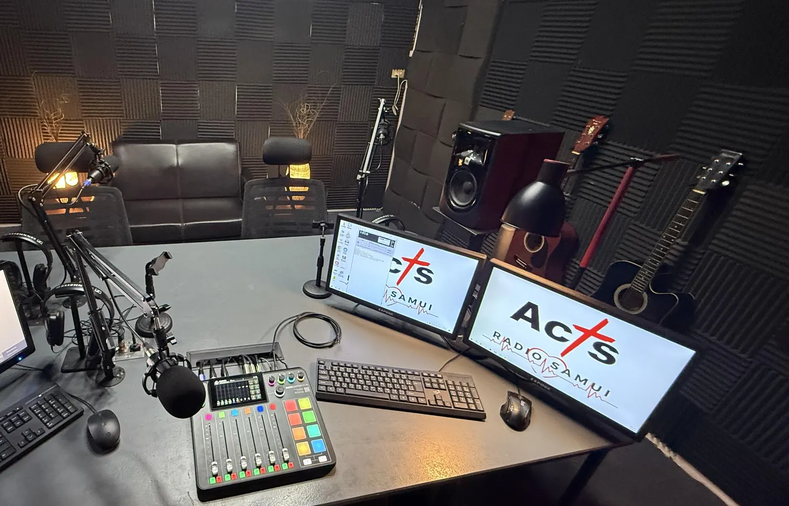

Acts Radio Samui shares the Gospel with listeners at every stage of faith, whether they're taking their first steps or seeking to grow deeper. Through worship music, Bible teaching and prayer, it offers hope, encouragement and guidance for personal, family and everyday challenges. It also aims to bring Christians from different churches and ministries together across Samui and beyond through fellowship, conversation and testimonies. It was launched by Koh Samui International Church in October 2026, with more to come.